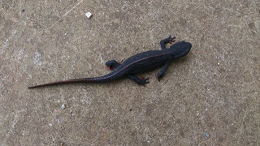
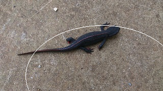
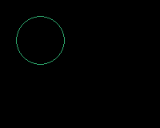
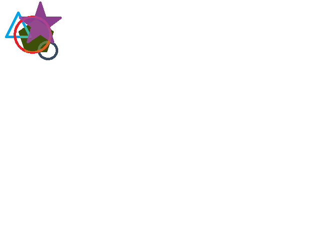

画像を取り込む
画像ファイル名から取り込みを行い、画像IDを取得する。画像IDはハンドラ的なもので各種画像処理で必要とされる。
$img = imagecreatefrompng("imori.png");
var_dump($img);
imagedestroy($img); // 破棄
出力
resource(3, gd)
検証
取り込んだ画像からサイズを取得する

$img = imagecreatefrompng("imori.png");
$sx = imagesx($img); // → 320
$sy = imagesy($img);// → 180
imagedestroy($img);
別名で保存する
$img = imagecreatefrompng("imori.png");
// 楕円を描画
$col_ellipse = imagecolorallocate($img, 255, 255, 255);
imageellipse($img, 200, 150, 300, 200, $col_ellipse);
// 別名で保存
imagepng( $img, "imori2.png");
imagedestroy($img);

空画像を作成してファイル保存する
// 空の画像を作成する $img = imagecreatetruecolor(200, 160); // 楕円の色を選択しますRGB $col = imagecolorallocate($img, 44,168,108); imageellipse($img, 50, 50, 60, 60, $col); // 画像を出力します imagepng( $img, "sec1-4.png"); imagedestroy($img);
アルファチャネルによる透明
元画像：toumei.png:背景透明元画像を取り込み、赤い円を描画し、透明を保ったまま保存する。
$img = imagecreatefrompng("toumei.png");
//ブレンドモードを無効にする
imagealphablending($img, false);
//完全なアルファチャネル情報を保存するフラグをonにする
imagesavealpha($img, true);
// 楕円を描画RGB
$col = imagecolorallocate($img, 221,77,64);
imageellipse($img, 50, 50, 60, 60, $col);
// 別名で保存
imagepng( $img, "toumei2.png");
imagedestroy($img);
画像：toumei2.png
複数の画像を合成し、一枚の画像を作成する
合成する4枚の画像

4枚の画像を合成して一枚の画像ファイルを作成する。透明、半透明を透過させながら合成する。
// 空の画像を作成する
$img = imagecreatetruecolor(320, 240);
// 背景を透明にする
imagecolortransparent($img, imagecolorallocate($img, 0, 0, 0));
// 画像ファイル名群
$imgFns = array('toumei1.png','toumei2.png','toumei3.png','toumei4.png');
// シンプルな画像合成
foreach($imgFns as $fn){
$img2 = imagecreatefrompng($fn); // 合成する画像を取り込む
// 合成する画像のサイズを取得
$sx = imagesx($img2);
$sy = imagesy($img2);
imageLayerEffect($img, IMG_EFFECT_ALPHABLEND);// 合成する際、透過を考慮する
imagecopy($img, $img2, 0, 0, 0, 0, $sx, $sy); // 合成する
imagedestroy($img2); // 破棄
}
// 別名で保存
imagepng( $img, "combine.png");
imagedestroy($img);
画像：combine.png

画像に別画像を拡大縮小しながらコピーする | imagecopyresampled
imagecopyでは拡縮しながら別画像をコピーすることができない。拡縮したい場合は、代わりにimagecopyresampled関数を用いる。
imagecopyresampled($img, $img2, コピー位置X, コピー位置Y,0, 0,拡縮サイズX, 拡縮サイズY,コピー元サイズX,コピー元サイズY);
| 引数 | 説明 |
|---|---|
| $img | コピー先、またはベース画像の画像リソースID。 |
| $img2 | コピー元、つまり別画像の画像リソースID。 |
| コピー位置X, コピー位置Y | コピー先でのコピー元画像の位置。 |
| 0,0 | コピー元画像上における座標を示す。基本的に0でよい。 |
| 拡縮サイズX,拡縮サイズY | 拡大または縮小したときの画像幅を指定する。 |
| コピー元サイズX,コピー元サイズY | コピー元画像の幅。 |